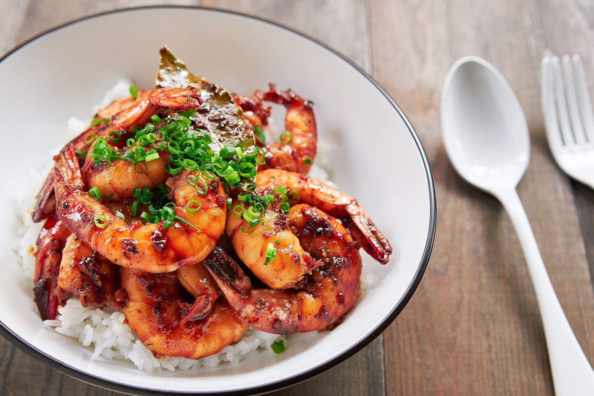

Shrimp Adobo

Ingredients:
2 teaspoons vegetable oil
12.4 ounces shrimp
0.3 ounces garlic (1 very large clove)
1/4 cup apple cider vinegar
2 tablespoons soy sauce
1 teaspoon coconut sugar
1 bay leaves
1/4 teaspoon ground black pepper
scallions (for garnish)
Procedures
- Heat a frying pan until hot. Add the vegetable oil and swirl to coat the pan.
- Add the garlic and shrimp and spread into a single layer. When the shrimp start to brown, flip it over and sear until it's almost (but not completely) cooked through. Transfer the shrimp to a bowl and set aside.
- Add the apple cider vinegar, soy sauce, coconut sugar, bay leaves and ground black pepper to the pan and bring the sauce to a boil. Continue boiling until the sauce has reduced and is nice and thick.
- Add the shrimp back in and toss to coat.
- Serve the shrimp adobo on top of hot white rice garnished with chopped scallions.
Back to Homepage